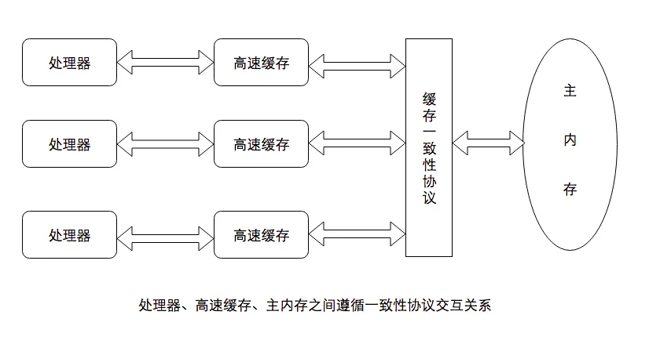
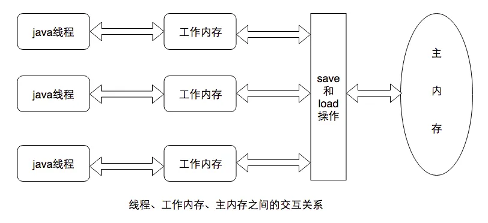

[Tech]:Java
Java内存模型和线程安全问题
缓存一致性问题
由于计算机处理器运算速度与数据传输的速度差距太大，因此引入高速缓存来实现处理器性能使用的最大化，但是由于缓存与内存的传输速度差异又会导致多个处理器在使用同一个主内存的过程中缓存不一致的问题。
因此提出内存模型的概念：
在特定的操作协议下，对特定的内存或高速缓存进行读写访问的过程模拟。
目的是为了消除缓存不一致的问题。

Java内存模型
Java内存模型也是为了解决缓存不一致问题的一个过程抽象。
它的主要目的是定义程序中的各种变量和访问规则，即关注变量在虚拟机和内存中传输的底层细节。
Java内存模型规定了，所有的变量都存储在主内存中，线程对变量的操作都在工作内存中进行，不能直接读写主内存中数据。不同线程的工作内存中的变量不能共享，线程之间的通信由主内存完成。

主内存和工作内存中的交互
- lock（锁定）：让主内存的变量归一条线程独有
- unlock（解锁）：让被锁定的变量解锁
- read（读取）：从主内存读取变量
- load（载入）：把读取的变量载入工作内存
- use（使用）：执行引擎操作变量
- assign（赋值）：把执行引擎中的值赋给工作内存
- store（存储）：工作内存的变量传给主内存
- write（写入）：主内存把传来的数据写入主内存
规定：一个线程，load必须在read之后，write必须在store之后，中间可以穿插其他线程的操作。
上述8中操作，可以简化为read、write、lock、unlock。
8中操作必须就有原子性，但是对于64位的数据类型（long和double）可以拆分为两个32位执行。
volatile关键字
volatile的语义：
一、保证被修饰的变量对所有线程的可见性：能够看到其被修改；
二、禁止指令重排序优化：在字节码中插入内存屏蔽指令保证处理器不发生乱序执行。
缺点：读操作快，写操作慢。
内存模型的特征
原子性
不可分割、不被打断的操作。
可见性
当一个线程修改共享变量时，其他变量能够立刻得知。
以主内存为媒介，通过修改后将新值传给主内存，读取时从主内存刷新来实现。
volatile、synchronized、final都可以实现可见性。
有序性
在本线程内观察，所有操作都是有序的，在线程间观察所有操作都是无序的。
通过volatile和synchronized关键字来保证线程间的有序性。
线程的实现
- 内核线程实现：由操作系统支持（世界是内核线程的高级接口——轻量级进程）。1：1
- 用户线程实现：建立在用户空间的线程库上，通过用户程序自己处理。1：N
- 混合实现：轻量级进程和用户线程混合。N：M
Java线程是基于操作系统原生线程模型实现的，即1：1的线程模型。
线程调度的方式
- 协同式：线程主动通知系统进行线程切换。
- 抢占式：系统来分配线程，不由线程本身决定。（Java使用抢占式）
线程安全
多个线程同时访问一个对象时，如果不需要线程的考虑调度和交替执行也不需要进行额外的同步（加锁、解锁等操作），或者在使用者进行任何其他协调操作，都能得到正确的结果，那么这个对象就是线程安全的。
安全程度：
- 不可变：final修饰
- 绝对线程安全：对象多次操作都是线程安全的。（特定顺序的连续调用）
- 相对线程安全：对象单次操作是线程安全的。
- 线程兼容：对象本身不安全，需要使用同步手段。
- 线程对立：不管采取什么调用手段都不能并发使用代码。
线程安全的实现方法
互斥同步（阻塞同步） 悲观锁
一个时刻只有一个线程能够访问共享数据。
基本实现是synchronized关键字，块结构同步语法。
synchronized关键字经过javac编译后会在同步块前后形成monitorenter和monitorexit字节码指令。
执行monitorenter后，尝试获取对象的锁，如果对象没有被锁或者线程已经有锁，锁计数器+1，执行monitorexit后，锁计数器-1，锁计数器为0，释放锁。
所以synchronized修饰的代码块是可重入的，且在释放锁之前会无条件阻塞其他线程进入。
java.util.concurrent.locks.Lock接口提供了一种能够以非块结构操作实现的互斥同步。
ReentrantLock是Lock最常见的实现，它比synchronized多了一些高级功能：
- 等待可中断：被阻塞的线程可以放弃等待
- 公平锁：根据申请锁的时间顺序来依次获得锁。（默认关闭，开启后吞吐量受影响）
- 绑定多个条件：synchronized代码块内要调用wait()、notify()、notifyAll()对象需要再加一个锁，而ReentrantLock只需要多次调用newCondition()方法。
非阻塞同步 乐观锁
基于冲突检测的乐观策略：不管风险先操作，如果发生了冲突再进行补偿措施。
通过CAS实现：更新值前需要查看旧值，旧值发生改变则不更新，否则更新。整个过程是一个原子性操作，不可被打断。
存在“ABA”问题的漏洞：即旧值被更新了两次，前后不变化。CAS无法察觉这种变化。
但“ABA”问题并不影响并发性能，也可以通过加入版本信息的方法来避免“ABA”问题。
无同步方案
可重入代码：代码执行中被打断然后再去执行其他代码，再次返回后程序不出错。
可重入代码不依赖全局变量、共享变量，用到的变量由参数传入，不调用非可重入代码。
实现方式有：
- 基于消费队列的”生产者-消费者“模型
- 使用ThreadLocal实现线程本地存储：每个线程都持有一份本地线程变量
锁优化
自旋锁和自适应锁
挂起线程和恢复线程都需要转入计算机内核中完成，给JVM的并发性带来很大的挑战，所以可以让阻塞线程进行空转（自旋）直到拿到锁为止，避免线程中断而产生的消耗。
前提是计算机有两个或以上的处理器，能够让两个线程并行进行。
适用于很快释放锁的线程。
自适应锁即是JVM自己优化何时进入自旋状态，判断依据是前面进入自旋的线程获取锁的效率。
锁消除
如果锁数据只被某个线程一直占有，JVM在即时编译期间会把锁消除。
判断依据是，在一段代码中堆中的数据不会逃逸出被其他线程访问。
锁粗化
在频繁使用的锁的代码中，把锁移到代码最外围。
比如多次调用StringBuffer的append()方法，JVM会把锁的范围定到第一个append()之前和最后一个append()之后，即把所有的append()方法包裹起来。
轻量级锁
加锁
首先创建锁记录空间（Lock Record），拷贝对象头，通过CAS试探操作，如果成功，则在对象头中标记为轻量级锁，不成功但是已经持有锁就进入锁；
如果失败且没有锁则在对象头中标记为重量级锁。
解锁
使用CAS把记录空间替换回来，如果成功替换则顺利完成；
否则说明其他线程尝试获取该对象的锁，那么在释放锁的同时要唤醒被挂起的线程。
前提是没有多线程竞争的情况下，减少重量级锁使用操作系统互斥量而产生的性能消耗，如果存在竞争，轻量级锁比重量级锁更慢。
偏向锁
在无竞争的情况下把同步的操作也消除掉。
在锁对象第一次被线程获取的时候，JVM把锁对象的偏向模式设为“1”，且CAS把获取锁的线程ID记录在锁对象的头部，如果CAS成功那么持有偏向锁的线程以后每次访问这个对象都不再需要同步；
如果有其他线程访问，则偏向模式结束并把偏向模式重置，后续再采用轻量级锁的流程处理。